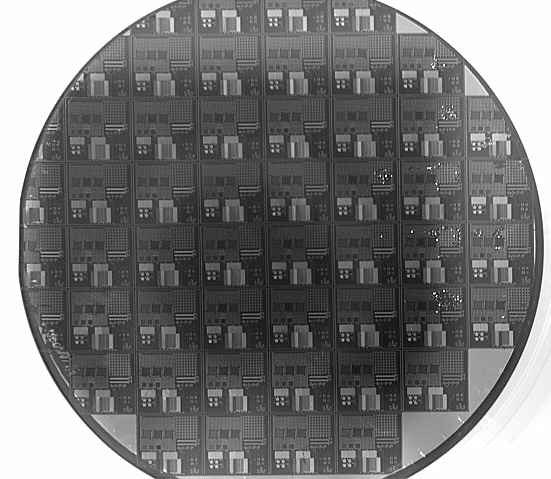
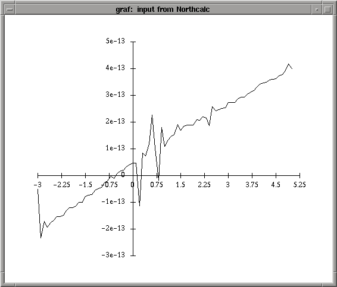
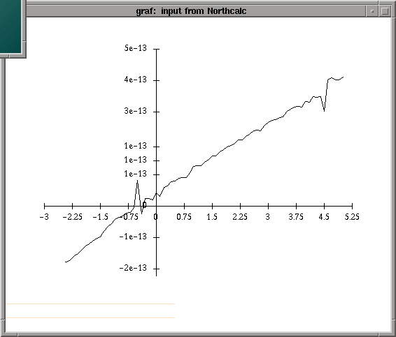
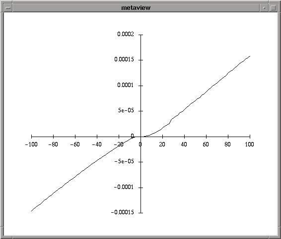
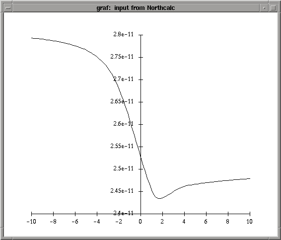
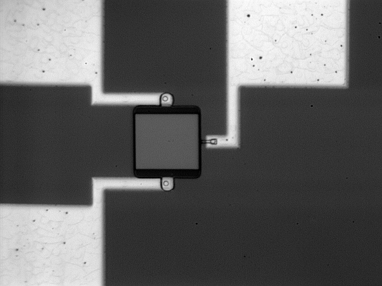
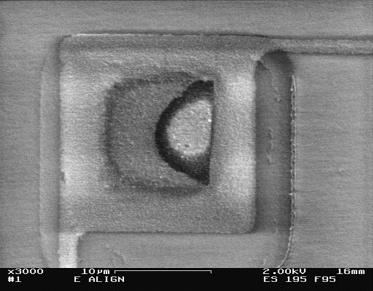
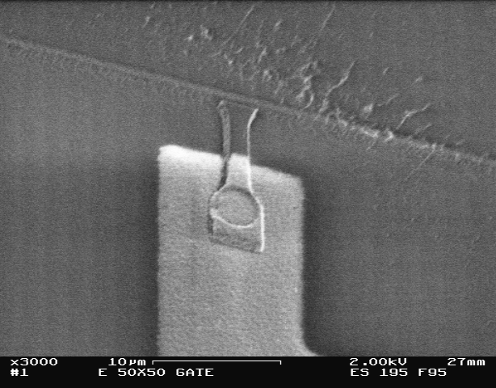
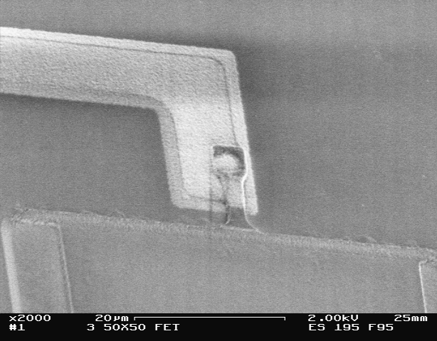

4. Results:
A. Successfully built THREE full-feature wafers, 1 metal wafer

B. Electrial Test Results
- 1. MOSFET -> Drain/Source Current-Voltage Curve
- a. only linear Ohmic behavior observed (along with some noise)
- b. very low currents (~10^-12 Amps)


- 2. MOSFET -> Drain/Body Current-Voltage Curve
- a. only linear Ohmic behavior observed (along with some noise)
- b. very low currents (~10^-12 Amps)
- 3. Poly Silicon Current-Voltage Curve

- 4. Metal Contact - Capacitance vs. Voltage Curve

- 5. Aluminum Wire -> 4 point Resistance Measurement
- a. 4 pt measured: 3.5 kOhm
- b. 2pt measured: 3.8 kOhm
- c. Contact must be 300 Ohms
C. Electron Microscope Results
- 1. Whole MOSFET on Wafer #B -> Looks good here!!!

- 2. Alignment Mark - Out of Alignment (wafer #E)

- 3. MOSFET on Wafer #B -> Poly Gate-Aluminum Broken Contact - since not enought Aluminum

- 4. MOSFET on Wafer #E -> Bad Alignment
